AUTOBIOGRAPHY
Superconductivity | Quantum Physics | Materials Science | Mechanical Engineering
( \(\uparrow\) Click to enter the paragraph.)Experience:
| Researcher | Pure-Perspective Research Group | Superconducting Qubit Physics | 2024.10- |
| Postdoc | National Tsing Hua University | STM Physics in \(TaS_2\) | 2024.03-2024.09 |
Education
| Ph.D | Materials Science | National Tsing Hua University | Article in Superconductivity \( ^1 \) TA Award in Physics | 2016.09-2024.01 |
| B.S | Power Mechanical Engineering (Major) Physics (Minor) | National Tsing Hua University | Invention in CVT \( ^2 \) Conference Article in Aerodynamics \( ^3 \) | 2012.09-2016.06 |
\( ^2 \) Pair-Ru Wang, Zi-Yang Zheng, Hsiao-Wei Chiang, Continuously Variable Transmission, US 10030745 B2, TW I580876
\( ^3 \) Peir-Ru Wang, Zi-Yang Zheng, Hsiao-Wei Chiang, Low Speed Wind Tunnel Study of Variable Tandem Wing Aircraft Design: Earlier-on Experiment and Study, A.A.S.R.C Conference (2014)
Brief About Me
I am driven by curiosity and have studied across various disciplines, including mechanical engineering, physics, and materials science. After graduating from high school, my interest in mechanics and aerodynamics led me to study Power Mechanical Engineering at NTHU. My fascination with mechanics culminated in the invention of patents for a continuously variable transmission, while my enthusiasm for aerodynamics resulted in a published article at the A.A.S.R.C. 2014 conference on the topic of tandem wing design.
During this period, I gradually developed an interest in physics, particularly in superconducting materials. This passion led me to study for a Ph.D. in Materials Science and Engineering, where I began exploring ways to enhance superconductivity from both theoretical and materials research perspectives. Applying my knowledge from mechanical engineering, I constructed automated measurement and powder mixing robotics, accelerating the research process.
Furthermore, I maintained my enthusiasm for fundamental physics by taking courses in General Relativity, Quantum Field Theory, and Statistical Mechanics, and I served as a teaching assistant in the Physics Department, where I was awarded the Outstanding TA Award. My diverse background and expertise allow me to provide innovative solutions to complex problems.
Currently, I am a postdoc in Materials Science and Engineering, researching 2D superconducting quantum materials. In the future, I hope to seek employment in the fields of quantum and materials science, aiming to apply cutting-edge technology to practical applications.
Study and Research in Superconducting Qubit
Recently, I established a small education and research group, Pure-Perspective Research Group, dedicated to advancing knowledge in superconducting (SC) qubit physics. My work involves studying the Hamiltonian of SC control circuits and employing Python to simulate and visualize qubit state evolution on the Bloch sphere. Our current research focuses on the mathematical frameworks of Lie groups and gauge theory, with an emphasis on their applications in qubit control and topological physics.

▲Simulation of ideal and detuned \(\frac{\pi}{2}-\frac{\pi}{2}\) controls, i.e., the Ramsey experiment.

▲Simulation of detuned \(\frac{\pi}{2}-\frac{\pi}{2}\) control with varying time delays in the Ramsey experiment.
Progress in Postdoc Works
I have been focusing on the study of 2D quantum materials, specifically 2D Transition Metal Dichalcogenides (TMDs), including \(TaS_2\), \(NbS_2\), and \(VS_2\). These Van der Waals layered materials exhibit promising properties such as superconductivity, charge density waves, and Moiré phenomena.
During my Ph.D., I studied superconducting bulk materials, and now I am gaining more experience in the physics of few-layer materials. TMDs provide an excellent platform for this research, and I am also advancing my skills in scanning tunneling microscopy (STM). Recently, I have been using STM to explore CVD-grown \(TaS_2\) with spiral structures.
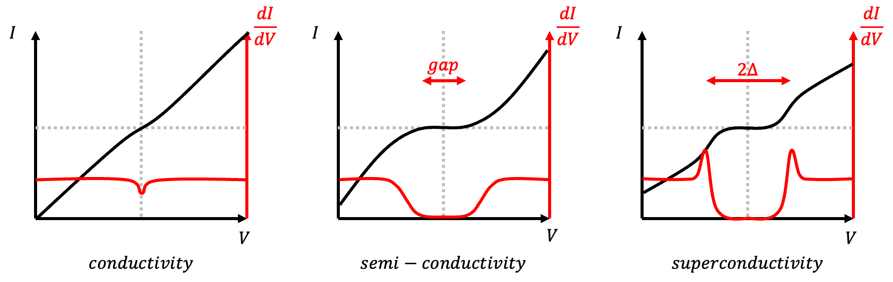
▲ STM is a powerful tool for imaging and analyzing the physical properties of surfaces at the atomic scale. By measuring the quantum tunneling current between a sharp conductive tip and a sample surface, STM provides atomic-resolution insights into both the topography and electronic structure of materials. STM can be used to study the local density of states (LDOS) and various local physical properties. The I-V curve can directly analyze the conductivity of materials. (Click to enlarge)
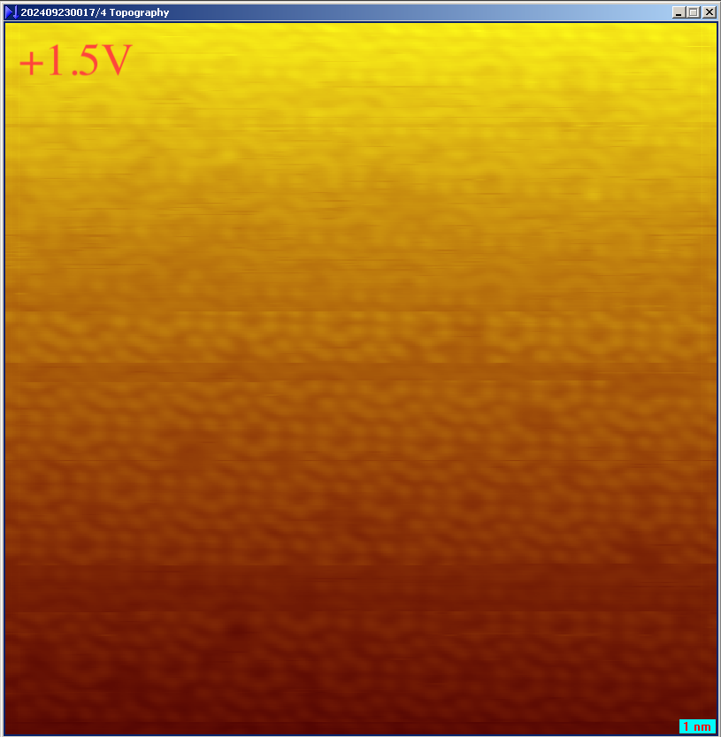
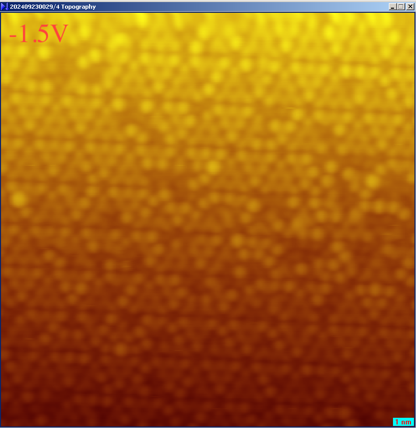
▲ I have learned to use standard Si(111) to calibrate STM. (Click to enlarge)
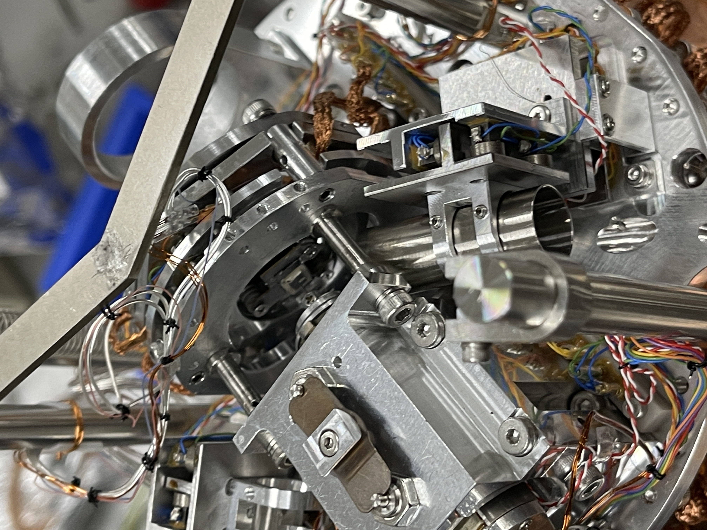
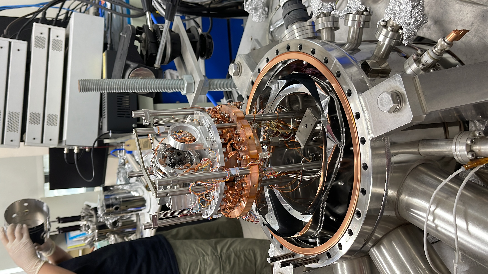
▲ I have experience in maintaining UNISOKU's STM USM-1400. (Click to enlarge)
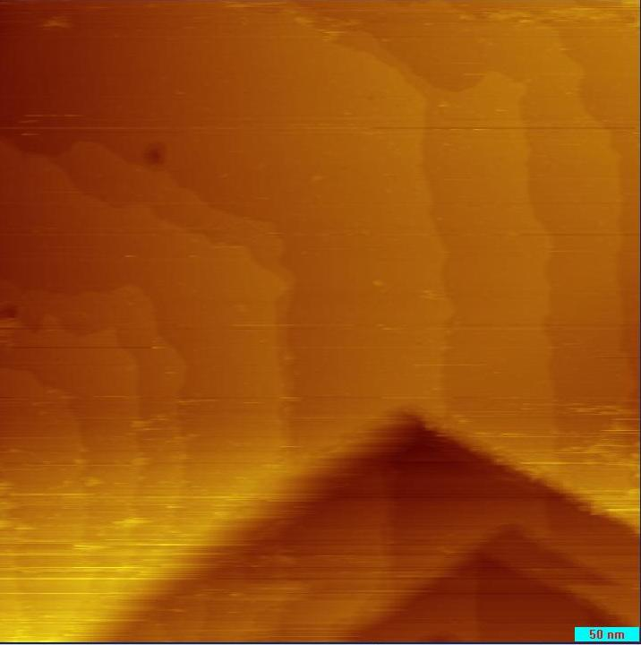
▲ Recent progress in exploring CVD-grown \(TaS_2\) with spiral structures.(Left)Room temperature STM image. (Right)77K image. (Click to enlarge)
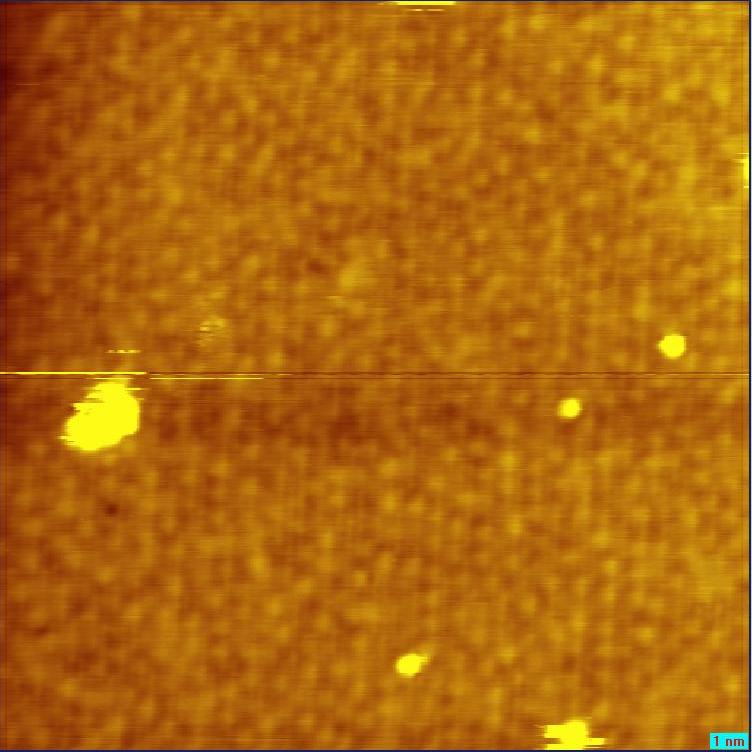
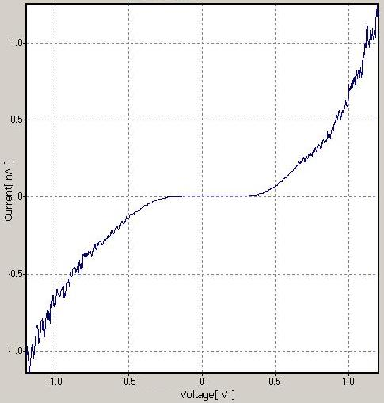
▲ The surface image of spiral layered \(TaS_2\) (left) and the I-V curve (right) at 77K. The I-V curve demonstrates the gap nature of \(TaS_2\), possibly Mott gap. (Click to enlarge)

▲ I think this is an impressive image that demonstrates the crossover from the stoichiometric phase (left) to the non-stoichiometric phase of \(TaS_2\) (right). This is the powerful of CVD growth method that can fine-tune the chemical composition and provide a fruitful platform for physical researches! (Click to enlarge)
{kind=link}
{kind=link}
{kind=link}
{kind=link}
{kind=link}
{kind=link}
{kind=link}
{kind=link}
{kind=link}
Brief of My Ph.D. Works
My doctoral research focused on how to enhance superconductivity at ambient pressure through materials design. Observing the critical temperature of superconductors, one finds that it increases with the diversity of compound compositions. Extrapolating from this trend, it is anticipated that oxides containing 12 or more elements could achieve room-temperature superconductivity. If we select 12 elements from a commonly used set of 80 elements, there would be at least \(C_{12}^{80}≅10^{14}\) possible combinations! I increased research efficiency from 3 aspects:
1. Propose the theory of critical coupling constants, using this theory to design chemical formulas.\(\to\)Theory of Critical Coupling Constants
2. Automate the preparation of oxide powder compositions to enhance efficiency.\(\to\)Laboratory Automation II: EA-2 Scamander
3. Automate the resistivity temperature 𝝆-T measurements, witch can simultaneously measure multiple samples.\(\to\)Laboratory Automation I: EA-1 Veronica
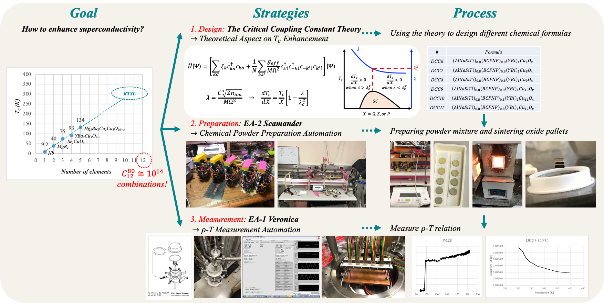
▲Brief of My Ph.D. Works.(Click to enlarge)
{kind=link}
Teaching Assistant in Physics
I have a minor degree in physics and have taken courses in theoretical mechanics, electromagnetism, and quantum physics. I am particularly interested in the variational principle of least action and Noether’s theorem, which reveal the relationship between symmetry and conservation laws. As a teaching assistant in several physics courses, I received the NTHU Outstanding Teaching Assistant Award in 2019 for my dedicated efforts.
\(\to\)TA in Physics
Bachelor’s Degree
I studied two projects in my bachelor degree:
1. The invention patents of the self-adaptable, positive motion continuously variable transmission (CVT).\(\to\)CVT Patents
2. The second project was the study on the aerodynamic of variable tandem wing aircraft.\(\to\)Tandem Wing Aircraft
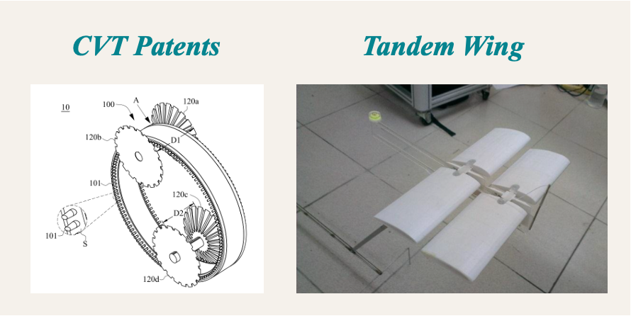
▲CVT and Tandem Wing Aircraft.(Click to enlarge)
{kind=link}
The Ability to Learn and Apply Knowledge Across Fields
During my 12 years at National Tsing Hua University, I studied across various disciplines, including mechanical engineering, physics, materials science, and mathematics. I maintained curiosity and strong learning capabilities, integrating knowledge from multiple fields to advance the formulation of superconducting theories, and to automate measurement and powder mixing processes.
Theory of Critical Coupling Constants
Superconductivity Enhancement Methods
DOI:10.1038/s41598-023-33809-5
My Ph.D. thesis is “The effect of critical coupling constants on superconductivity enhancement”. In the thesis, it clearly elaborated that the superconducting dome appears when the coupling strength approached to the critical coupling constants. Varying the phonon spectrum \(\Omega\), tuning the carrier number \(𝑍\), and increasing the pressure \(𝑃\) were three important approaches to enhance superconductivity \(𝑇_𝑐\). I extended the BCS-McMillan theory to unify effects of the phonon frequency \(\Omega\), the carrier number \(𝑍\), and the pressure \(𝑃\) on superconductivity.
Quantum Hamiltonian of Superconductivity
The quantum Hamiltonian of superconductivity is: $$\hat{H} \left| \Psi \right> =\left[ \sum\limits_{k\sigma} \xi_k \hat{c}_{k\sigma}^\dagger \hat{c}_{k\sigma} + \frac{1}{N}\sum\limits_{kk^\prime} \frac{g_{eff}}{M\Omega^2} \hat{c}_{k\uparrow}^\dagger \hat{c}_{k\downarrow}^\dagger \hat{c}_{-k^\prime \downarrow} \hat{c}_{k^\prime \uparrow} \right] \left| \Psi \right>$$ I derived the explicit form of coupling constant \(\lambda\) and \(𝑇_𝑐\) are $$\lambda = { C \sqrt[3]{Zn_{ion}}\over M\Omega ^2} $$ and $$T_c \sim \Omega\cdot exp\left(-{1 \over \lambda}\right) = \Omega\cdot exp\left[-{M\Omega ^2 \over C \sqrt[3]{Zn_{ion}}}\right]$$ , where \(C\) is a constant, \(M\) is the ion mass, \(Z\) is the valence number, and \(n_{ion}\) is the ion number density. The derivative of \(𝑇_𝑐\) with respect to \(\Omega\) is $${dT_c \over d\Omega}\sim {T_c \over \Omega}\cdot \left[1-{2\over \lambda}\right]$$ The derivative \(dT_c\over d\Omega\) is equal to 0 when \(\lambda\) is equal to 2. Define the critical coupling constant corresponding to the phonon frequency \(\lambda_c^\Omega=2\). Similarly, one can derived other two critical coupling constants \(\lambda_c^Z= {5 \over 3}\), and \(\lambda_c^P={4 \over 3}\).

These critical coupling constants are consistent with experimental observations and quantitatively classify superconductivity into three categories: weak (\(\lambda_c < \lambda_c^P\)) , intermediate (\(\lambda_c^P < \lambda_c^\Omega\)) , and strong coupling (\(\lambda_c > \lambda_c^\Omega\)) . Each category corresponds to different enhancement strategies. More precisely, the enhancement strategies for weak and strong coupling regions are opposite, but both inevitably bring superconductivity into the intermediate coupling region. For superconductors in the intermediate coupling region, general zigzag strategies further enhance the superconductivity. In particular, take that \(\lambda\) belongs in the interval \(\lambda_c^P<\lambda<\lambda_c^Z\) for the following discussion without loss of generality. In this interval, superconductivity can be enhanced by increasing \(P\) or decreasing \(Z\). First, let the superconductivity be optimized by tuning \(Z\), such that \(\lambda\) is equal to \(\lambda_c^Z\), denoted as \(\lambda_1\). Second, since \(\lambda_1\) is larger than \(\lambda_c^P\), we can increase \(P\) to increase \(T_c\). The second step causes \(\lambda\) to decrease and \(T_c\) is optimized when \(\lambda=\lambda_c^P\), denoted as \(\lambda_2\). Third, now \(\lambda_2\) is smaller than \(\lambda_c^Z\), \(T_c\) can be further increased by decreasing \(Z\). The third step increases \(\lambda\) and \(T_c\) is optimized when \(\lambda=\lambda_c^Z\), denoted as \(\lambda_3\). Repeat step 2 and step 3 by increasing \(P\) and decreasing \(Z\) alternately; \(T_c\) can be enhanced like a zigzag mountain climbing.
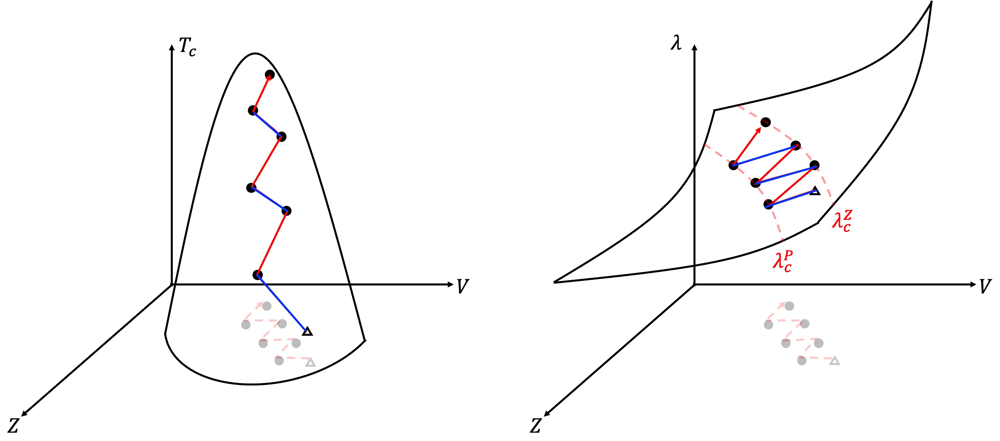(Click to enlarge){kind=link}
According to the theory, I focused on the chemical design including high phonon frequency, multiple carriers, and small lattice constants. I synthesized a series of high-entropy oxides (HEO) based on \(Bi_2Sr_2Ca_2Cu_3O_x\) and \(YBa_2Cu_3O_x\) superconductors. The micro structure of the HEO compounds was analyzed by ZEISS Gemini SEM and Bruker D2 PHASER XRD.
\(\to\) More Details
Laboratory Automation I:
EA-1 Veronica
The Resistivity Temperature \(\rho\)-T Measurement Automation
To increase the experiment processes, I designed and assembled the resistivity-temperature 𝝆-T measurement automation. "EA-1" stands for "Experimental Apparatus No.1", and the nickname of the project "Veronica" means "she who brings victory".
Specifications:
∙Measures 15 oxide or alloy pallets simultaneously
∙Range of Temperature: 70K to 400K
∙Range of Resistivity: \(1\mu\Omega cm\) to \(1G\Omega cm\)
Original CAD Design


▲Colored 3D view. Three images show the evolution of the design.(Click to enlarge)


▲The exploded view and the example of a dimensional drawing.(Click to enlarge)
Exterior
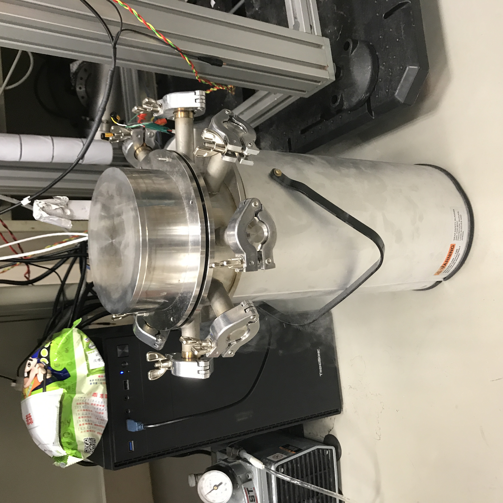{kind=link}
Improvement of the platform

▲The Derivation of the 4-Point Probe Method. \(R_c\) represents the contact resistance (\( \sim 10\Omega \)), and \(R_V\) is the internal resistance of the voltmeter (\( > 10M\Omega \)), such that \(R_V >> R_c\). For small resistance and superconductivity measurements, the contact resistance \(R_c\) becomes significant, making the traditional 2-point probe method inaccurate. The 4-point probe method eliminates the contribution of the contact resistance \(R_c\). (Click to enlarge)
The following images show the modification process, from a single sample, double samples, to 10 samples, and 15 samples.(Click to enlarge)
 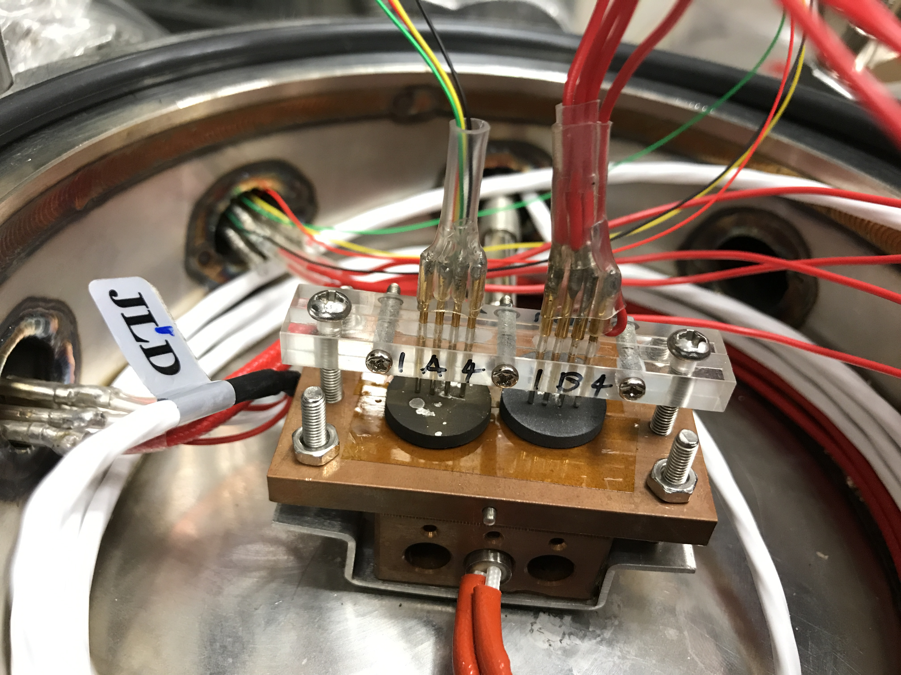
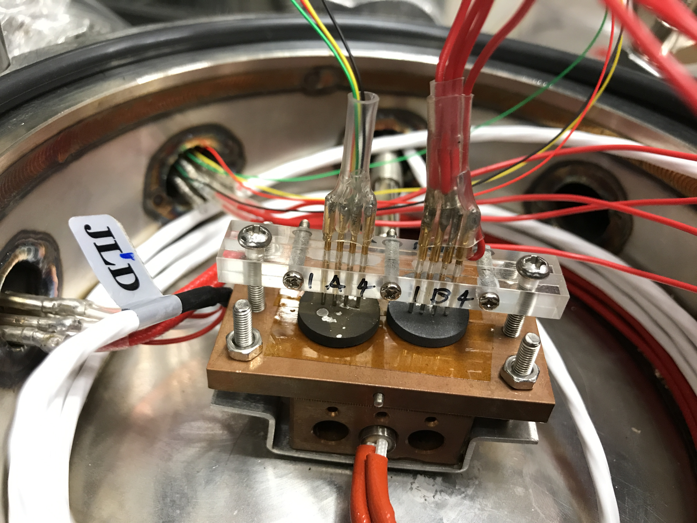{kind=link}
 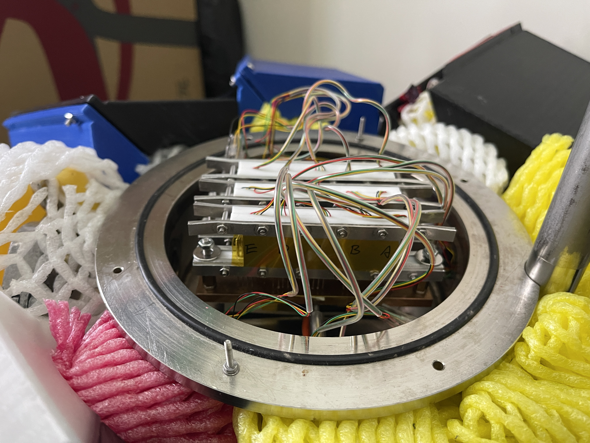
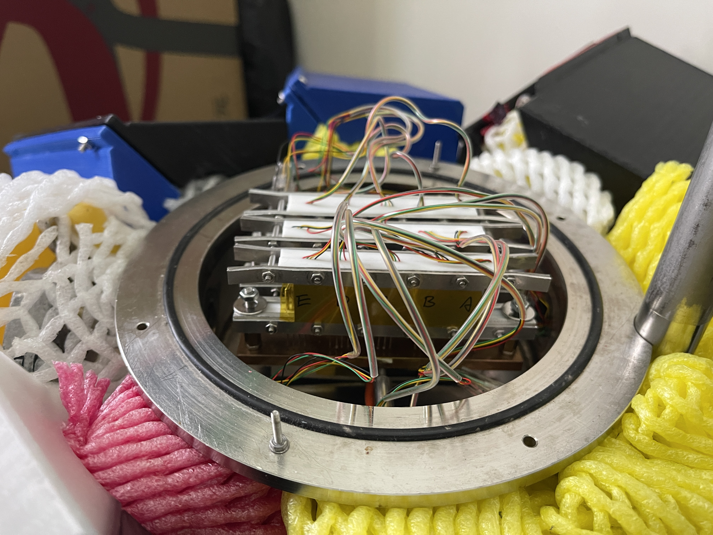{kind=link}
Instruments I have integrated:
| Temperature Controller | |
| Cryo-Con 32B * 2 | |
| Meters | |
| HP 34420A | Keithley 237 & 617 |
| Lock-In | |
| SR830 * 4 |
LabVIEW Design
LabVIEW codes control and collect information from the instruments through GPIB. Instruments include Keithley 237 and 617 meters, HP34420A meter, Stanford Research Systems SR830 Lock-in, and Cryo-Con 32B temperature controller.The original LabVIEW code was not modularized, making it difficult to expand. After modularization, the program became scalable to multiple measurement loops.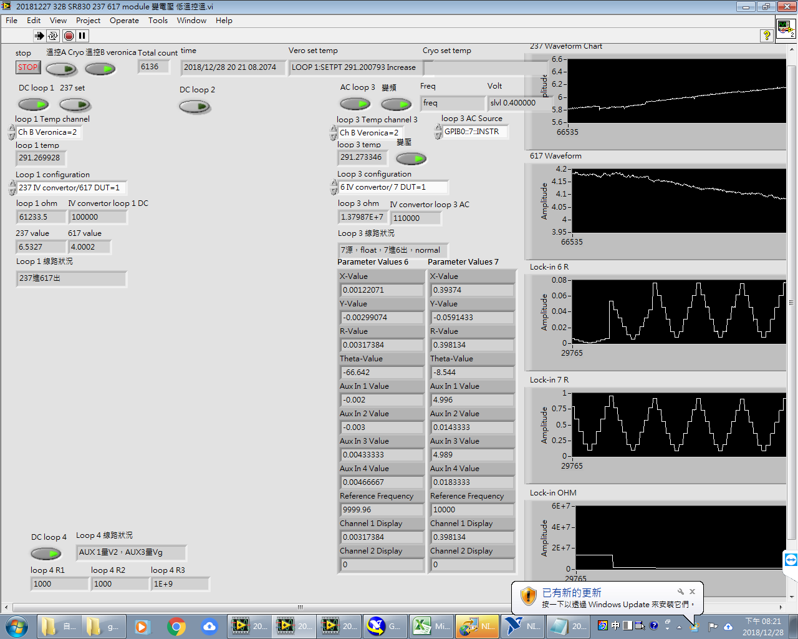
{kind=link}
▲Front panel view.(Click to enlarge)
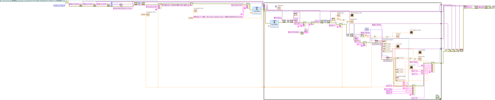{kind=link}
▲Block diagram view of early design.(Click to enlarge)

▲Block diagram view of modular design.(Click to enlarge)
Material Properties Measurement and Improvement in Precision
The following examples illustrate the modification process. Initially, the measurement accuracy was lower, but it improved later on with smoothed data.▼The left image shows the Y123 (\(YBa_2Cu_3O_x\)) superconductor exhibiting superconductivity below 93K. The right image displays the high-entropy oxide labeled DCC7. (Click to enlarge)

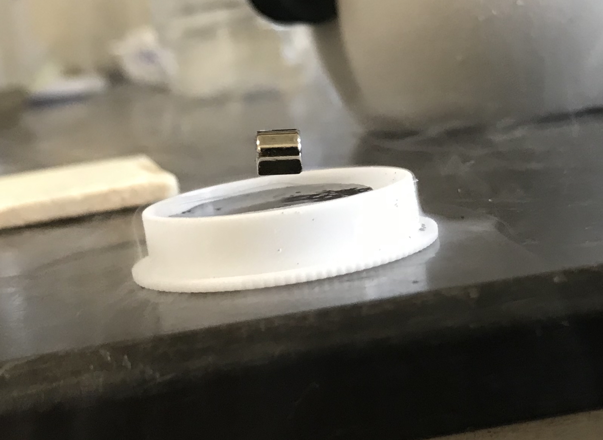
{kind=link}
▲I synthesized Y123 superconductor, which exhibited the superconducting Meissner effect below 93K. (Click to enlarge)
Laboratory Automation II:
EA-2 Scamander
The Chemical Powder Mixture Preparation Automation
"EA-2" stands for "Experimental Apparatus No.2", and the nickname of the project "Scamander" comes from J. K. Rowling's famous fiction "Fantastic Beasts and Where to Find Them". In this fiction, the character Newt Scamander is the author of the textbook "Fantastic Beasts and Where to Find Them". I named this project "Scamander", which means "Fantastic Chemical Formulas and Where They Are Made."
The chemical powder mixture preparation automation can prepare 96 different mixtures within 14 hours, which is 6 times faster than manual preparation. The machine offers 40 types of powder for selections. I designed components using AutoCAD and printed them with Ender-3S 3D printer. I also soldered electronic components onto circuit boards to control the step motors. 12 step motors controlled the XY motions of the powder boxes and the empty bottles. The signal control of powder boxes is implemented by a series of connected shift registers. The weight of powder mixture is measured by Shimadzu ATY-124 balance. The control program integrated LabVIEW, Arduino, and VBA. This machine can weigh the powder according to the user's experimental design and record any discrepancies.
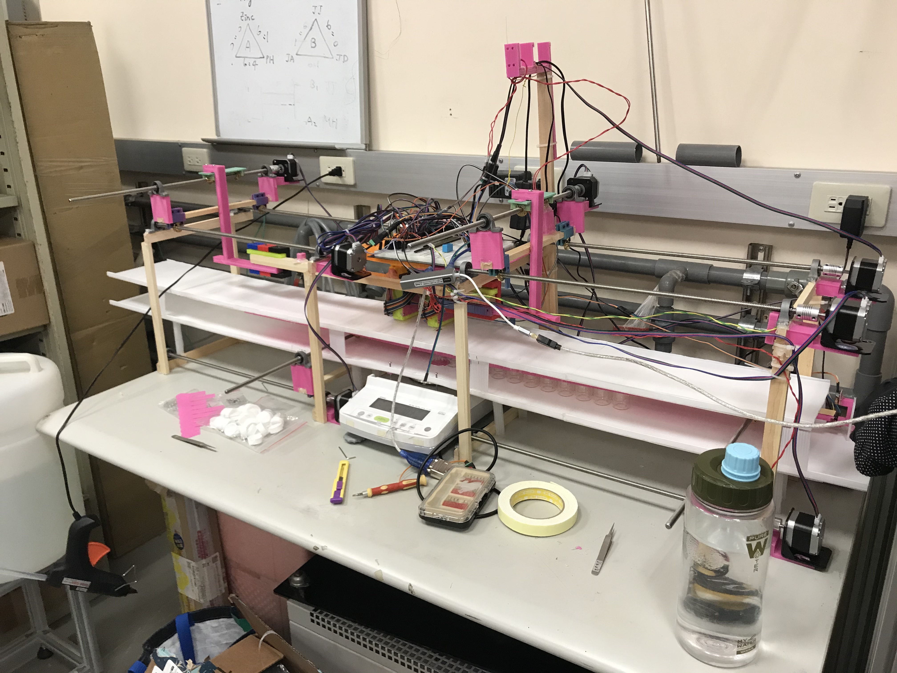{kind=link}
▲Full view of EA-2 Scamander.(Click to enlarge)
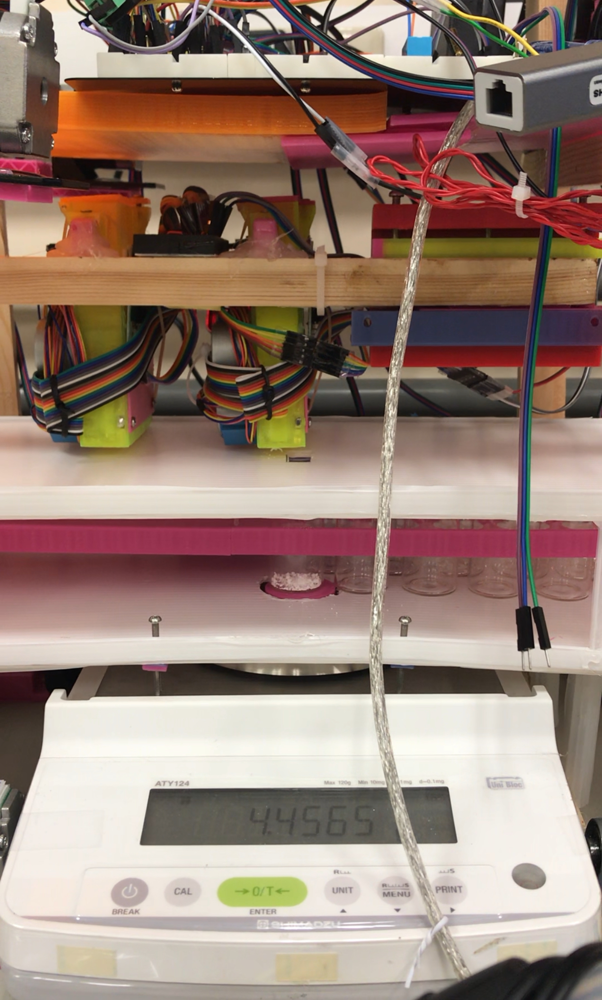{kind=link}
▲Measuring the weight of powder.
▲Initializing. The control program integrated LabVIEW, Arduino, and VBA. Starting from LabVIEW, calling VBA(Excel) to read the user's chemical powder formulation plan, generating control codes accordingly, then controlling Arduino to drive stepper motors for starting the experiment. The readings from the balance are obtained via RS-232.
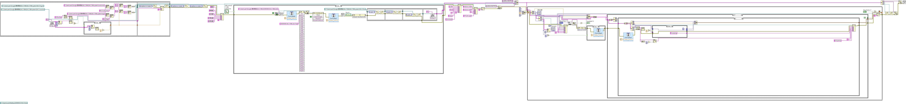{kind=link}
▲LabVIEW block diagram of EA-2.(Click to enlarge)
Testing and the construction of EA-2
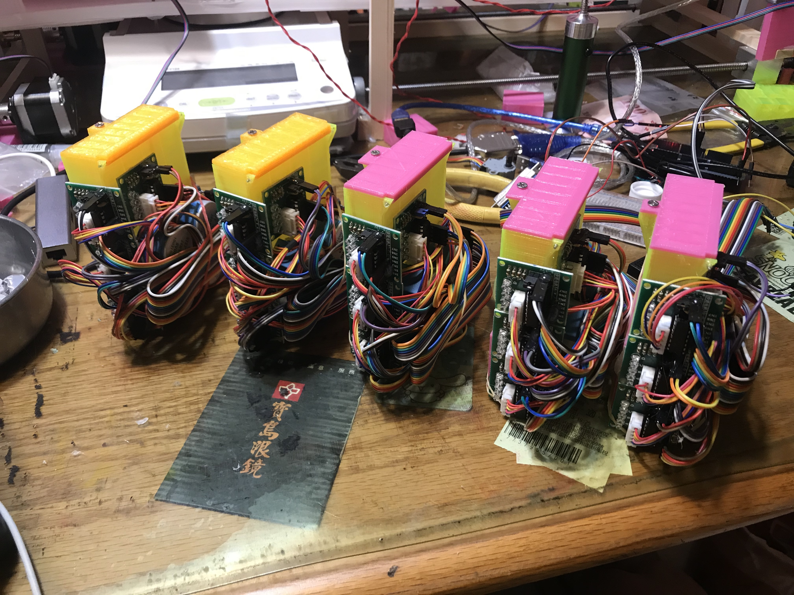{kind=link}
▲Powder boxes. The controller board mounted on each box.
Teaching Assistant in Physics
I also have minor degree in physics. I have taken the courses including theoretical mechanics I & II, electromagnetism I & II, and quantum physics I. I am interesting in the variational principle of least action and the Noether’s theorem, which imply the relation between the symmetry and the conservation law. These elegant results showed the beauty of physics, leading me to further study more physics courses and become TA in physics during my doctoral studies.
| Graduate School | |
| Classical Mechanics | Fluid Dynamics |
| Undergraduate | |
| General Relativity I & II | Statistical and Thermal Physics I & II |
| Theoretical Mechanics II | General Physics I & II |
I am the teaching assistant in statistical and thermal physics I & II, general relativity I & II, theoretical mechanics II, fluid dynamics, classical mechanics, general physics I & II, etc. I was recognized with the NTHU Outstanding Teaching Assistant Award in 2019 due to dedicated teaching efforts. My favorite teaching topic is the "Principle of Least Action." You can refer to the lecture notes I wrote.
\(\to\)Tutorial Website (Chinese Version)
\(\to\)Tutorial Website (English Version)
\(\to\)Lecture Note-Principle of Least Action(2019)
\(\to\)Lecture Note-Principle of Least Action(2018)
{kind=link}
{kind=link}
▲I was teaching the variational principle to obtain Maxwell's equations.
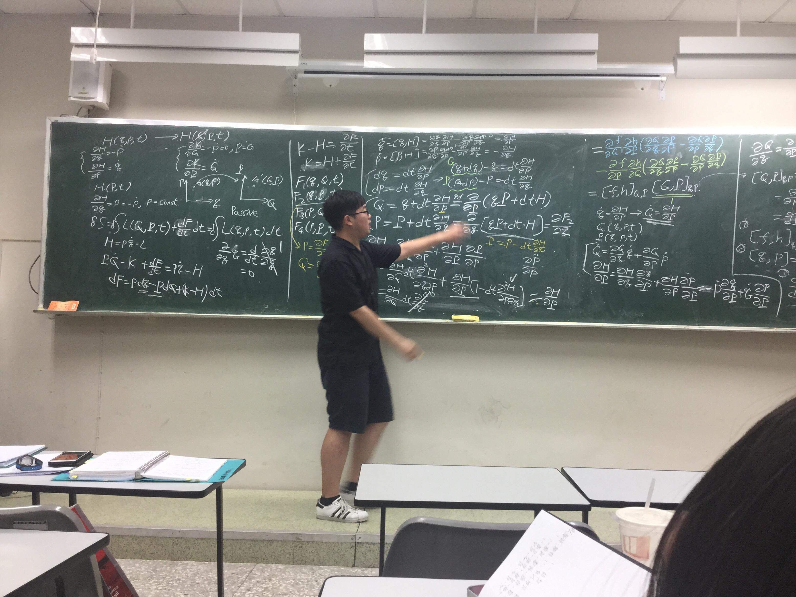 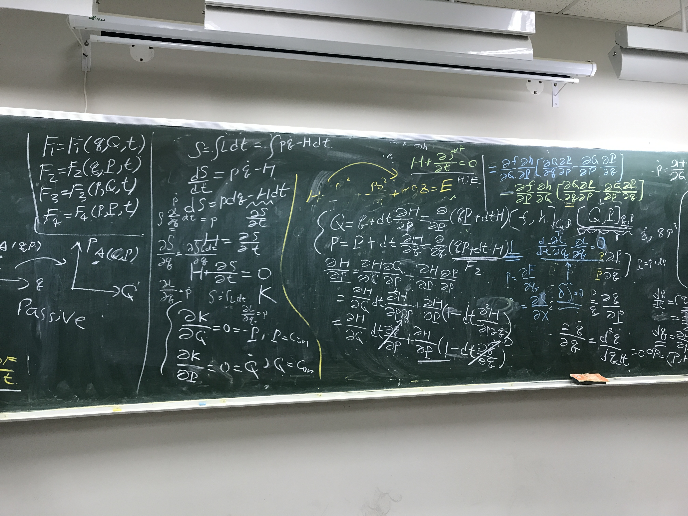
{kind=link}
{kind=link}
▲I was teaching the canonical transformation.
Courses I have learned in Physics:
| Ph.D | |
| String Theory (A+) | Elementary Particle Physics I (A+) |
| Statistical Mechanics II (A) | Nonlinear Dynamics and Chaos (A+) |
| Fluid Dynamics (A+) | Quantum Field Theory (A) |
| Physics of Superconductivity | Classical Mechanics |
| Undergraduate | |
| Relativity I | Quantum Physics I |
| Theoretical Mechanics I & II(A+) | Electromagnetism I & II |
Project Polaris
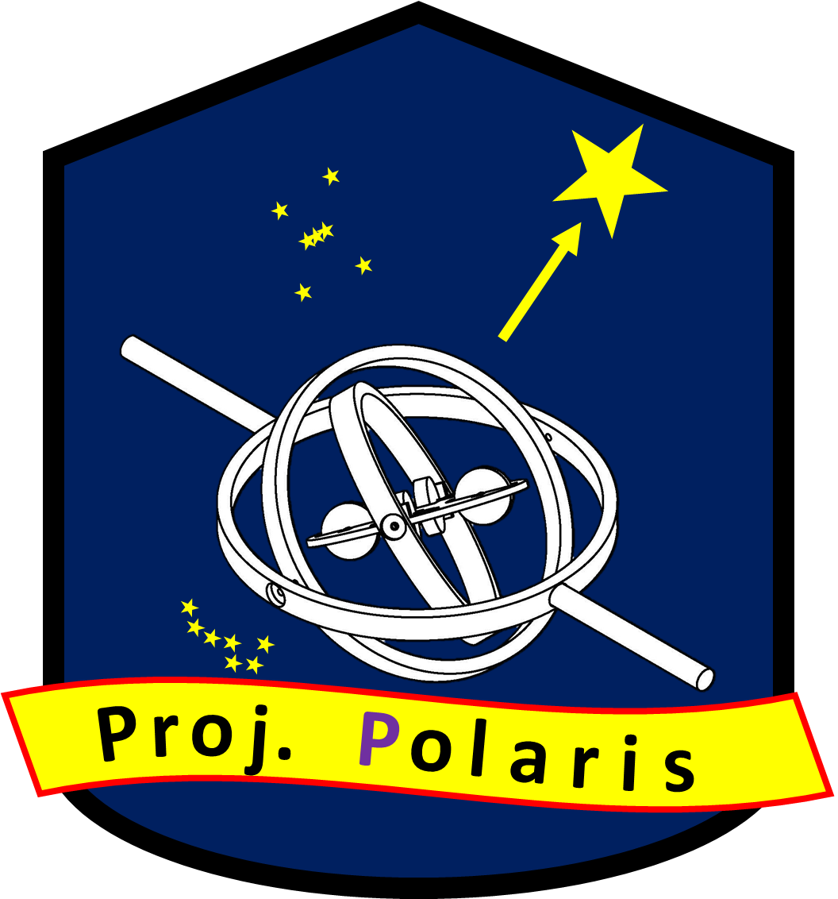{kind=link}
To enhance students' understanding of Euler angles and their engineering applications, such as gyroscopes, I designed a complete gyroscope teaching model. This tool demonstrates the application of Euler angles in aerospace engineering and highlights the risks known as 'gimbal lock.'
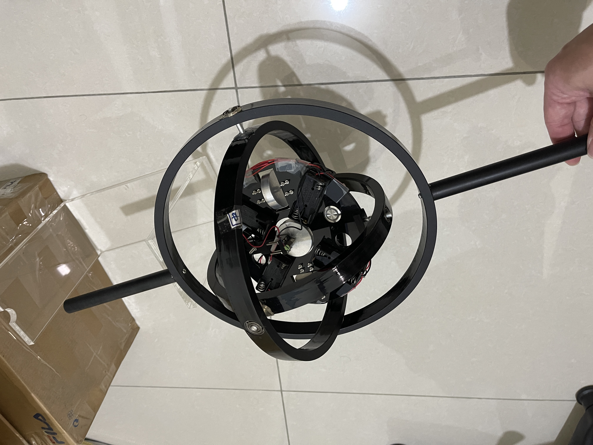{kind=link}
The CVT Patents
The Self-adaptable, Positive Motion Continuously Variable Transmission
This self-adaptable, positive motion continuously variable transmission (CVT) is able to transmit power by way of engagement, such that the coupling between the power transmission mechanism and the conical disk is more stable than the conventional friction CVT. Traditional CVTs use chain-based friction transmission to achieve continuous power transmission by adjusting the spacing of the pulley discs. However, friction transmission efficiency is lower, and it cannot achieve high torque output. The patent includes two types of positive motion transmission designs: chain-based and ring-based. Thus, the continuously variable transmission is competitive in high torsion application.
• US Invention Patent 10030745 B2• Taiwan Invention Patent I580876, Licence
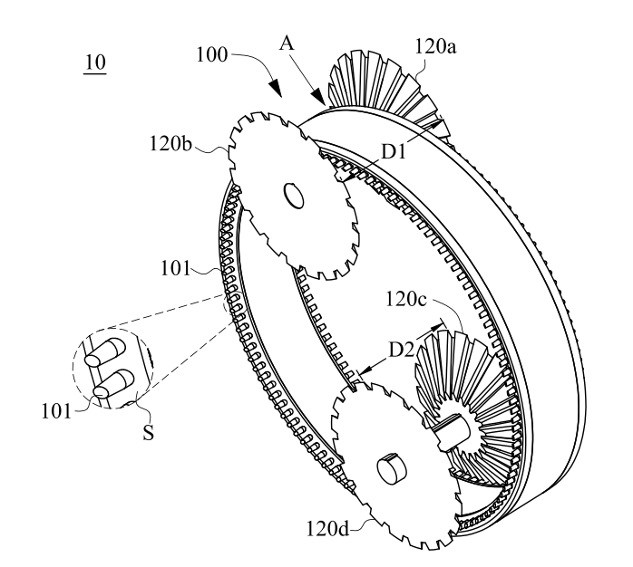 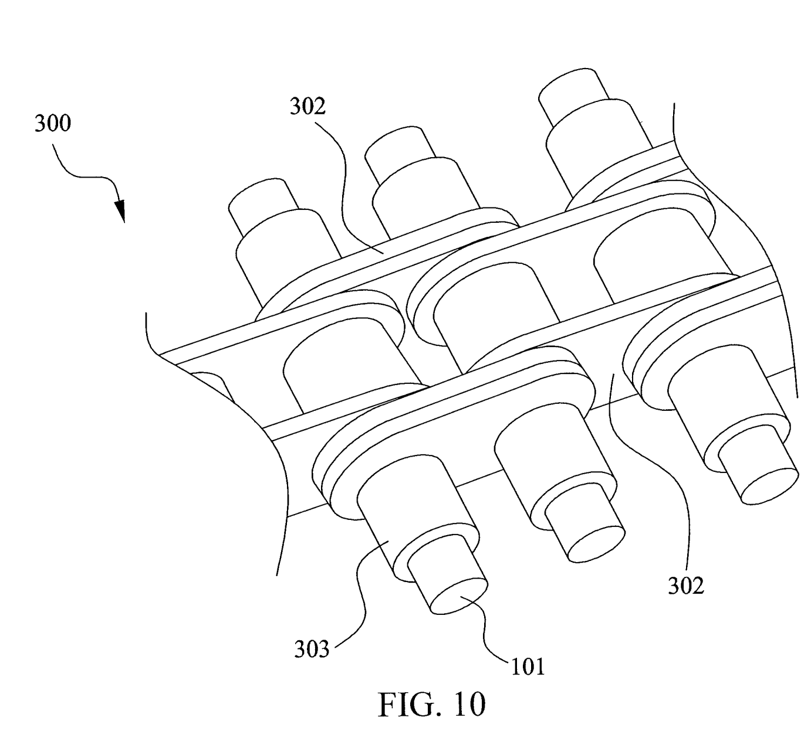
{kind=link}
{kind=link}
▲ The ring-based design (left) and the chain-based design (right).(Click to enlarge)
Early stages of design evolution
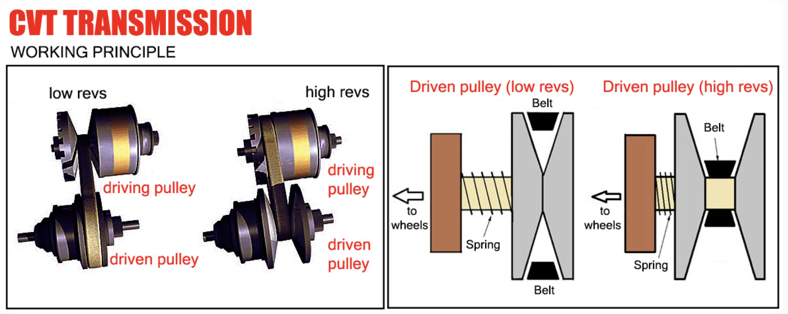{kind=link}
▲ Conventional CVTs rely on friction to vary the gear ratio.(Click to enlarge) Ref.

▲ When I was in junior high school, I was fascinated by CVT technology and tried sketching some ideas for CVTs(2008).(Click to enlarge)
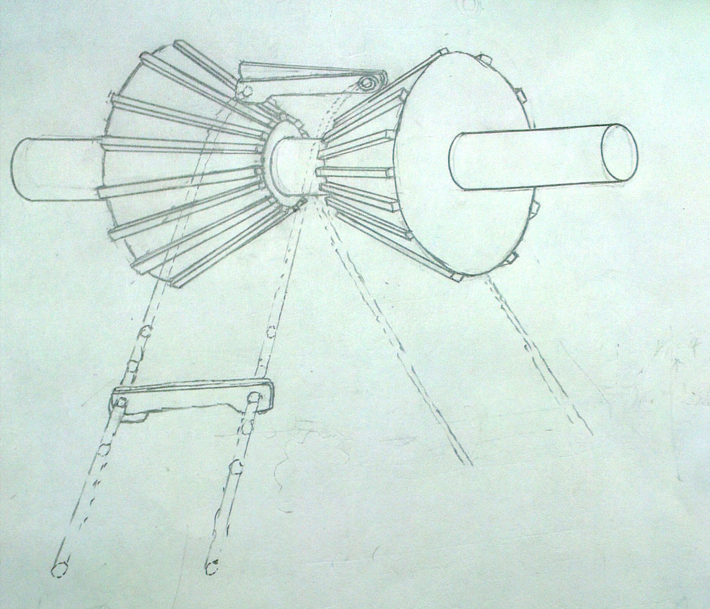
{kind=link}
▲ I have been pondering how to incorporate positive motion transmission into CVT. This idea first occurred to me during my first year in college (2013), when I conceived the self-adaptable chain-based design.(Click to enlarge)
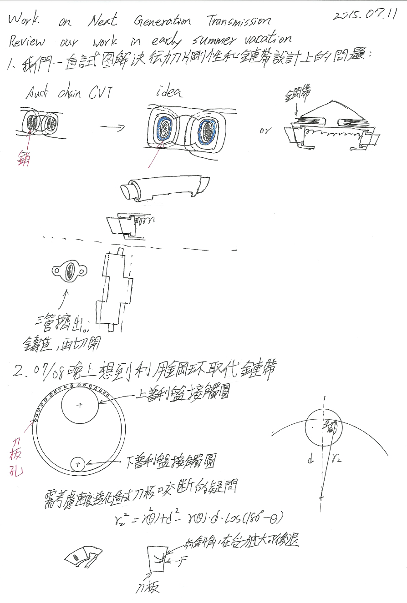 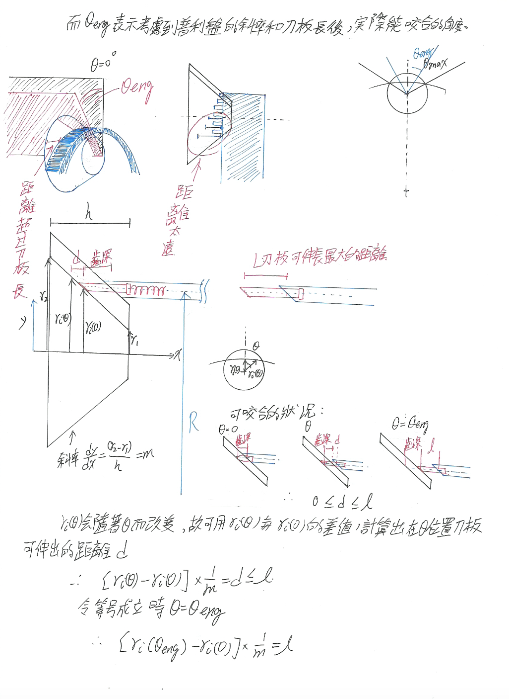 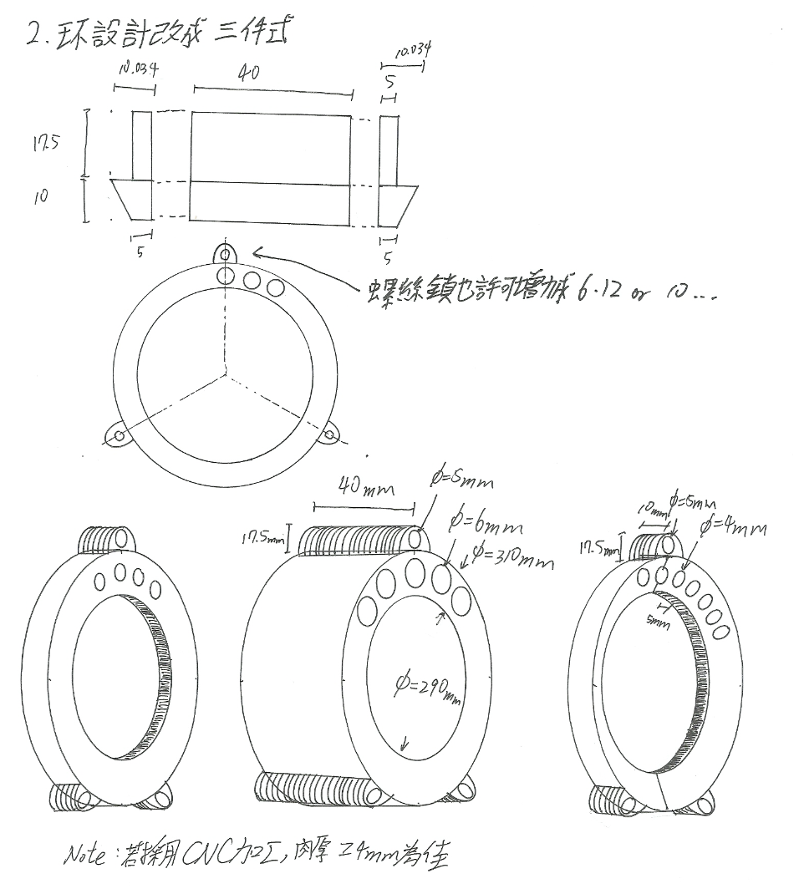
{kind=link}
{kind=link}
{kind=link}
▲Refinement of the design. Considering the structural weakness of the chain-based design led to the introduction of the ring-based design.(Click to enlarge)
Variable Tandem Wing
Wind Tunnel Study of Variable Tandem Wing Aircraft
The second project was the study on the aerodynamic of variable tandem wing aircraft. The variable tandem wing design can change the center of lift to match the center of gravity. This design can increase 33% lift and optimize the aerodynamic efficiency. The model aircraft was set up in the wind tunnel, and measure the lift force and the drag force to investigate the aerodynamic performance. We summarized these result and published in Aeronautical and Astronautical Society of the Republic of China (A.A.S.R.C) 2014 conference.
\(\to\)Article
{kind=link}
▲The single wing baseline design was tested in a wind tunnel.(Click to enlarge)

▲The variable tandem wing design.(Click to enlarge)
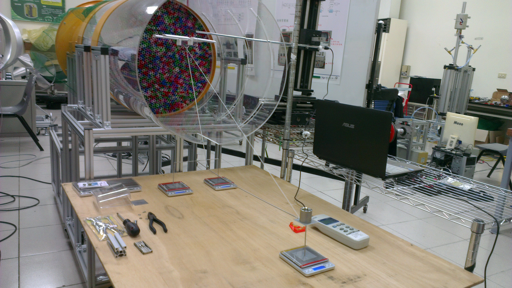
{kind=link}
▲The variable tandem wing was tested in a wind tunnel.(Click to enlarge)
-->